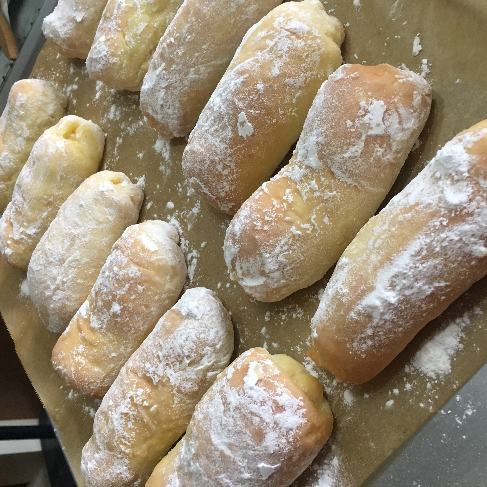

Cheese Roll

Description
These cheese rolls are heavenly. I first tried the cheese rolls at Mary Grace.
Although they were delicious, I thought they were too expensive. So, I decided to make them
at home. It's not that tough!
Recipe adapted from Foxy Folsky.
Ingredients
Dough
- 3 ⅔ cups all-purpose flour
- ⅓ cup sugar
- ¼ teaspoon salt
- 1 tablespoon instant yeast
- 1 cup milk lukewarm
- 2 medium eggs
- 1 stick unsalted butter or shortening
Topping
- ¼ cup unsalted butter softened
- ¼ cup granulated sugar
Filling
- 16 pieces cheese sticks 3-inch long and 1cm thick
Procedure
Water Roux
- In a small pot, cook the bread flour with water until it is thicken.
- Cover and set aside.
Bread Dough
- Mix all dry ingredients for the bread in the Kitchen Aid mixing bowl.
- In a small bowl, whisk egg together with water.
Coffee Topping
- Dissolve the coffee powder in hot water and then add vanilla essence.
- Mix all dry ingredients for the bread in the Kitchen Aid mixing bowl.
- In a small bowl, whisk egg together with water.
Filling
- Stir all ingredients for the fillng.
Home